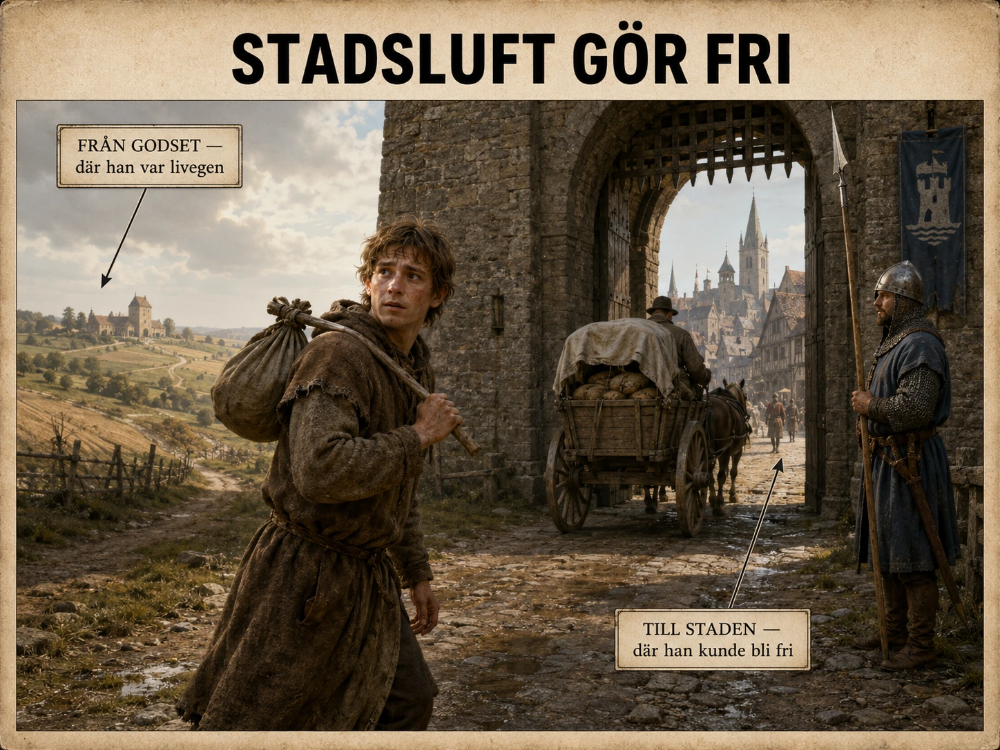

Natten han bröt mot lagen
Det var en av de sista nätterna i oktober. Martin väntade tills elden i stugan hade falnat och föräldrarna sov tungt. Sedan tog han sina skor i handen — inte på fötterna, för läder mot frusen jord lät för mycket — och steg ut i mörkret.
Han gick inte längs den stora vägen. Där kunde någon känna igen honom. I stället tog han stigarna, genom skogsbrynet och utmed kärrkanten där marken sög åt sig stegen och tystade dem. I bältet en kniv. I säcken en brödkant, en hopvikt mantel, några småmynt. Inte mycket att bära. Allt han ägde.
Han var inte soldat. Han var inte köpman. Han var inte pilgrim på väg mot ett heligt mål. Han var en flykting — men han flydde inte från ett krig. Han flydde från sin egen plats i samhället. Martin var livegen. Och det han just gjorde, att lämna godset utan sin herres tillåtelse, var olagligt.
Det han lämnade
För att förstå vad som stod på spel måste man veta vad det betydde att vara livegen. Det var inte slaveri i antik mening. Martin hade ett hem. Han kunde ha familj, djur, en jordlott att bruka. Men han ägde inte sin egen framtid.
Hans far hade brukat samma jord. Hans farfar likaså. Släkten hade i generationer hört till samma gods, och med jorden följde plikterna: avgifter att betala, en del av varje skörd att lämna ifrån sig, vissa dagar varje vecka att arbeta på herrens åkrar i stället för sina egna. Ville Martin gifta sig kunde han behöva betala för det. Skulle jordlotten gå i arv kostade även det. Brödet bakades i herrens ugn, säden maldes i herrens kvarn — och för bådadera tog herren betalt.
Det feodala samhället vilade på jord. Men jord var aldrig bara mark. Jord var kontroll över människor. En herres makt låg inte främst i att han ägde åkrar och skog, utan i att människor var bundna att arbeta där. Och därför var en livegen som flydde inte bara en granne som flyttade. Han var en förlust — arbetskraft, inkomst och ordning som gick upp i rök en oktobernatt.
Det Martin bar med sig var alltså inte bara mantel och bröd. Det var ett rykte. Vid marknaden i somras hade en kringresande köpman talat om en stad två dagsresor bort. Och köpmannen hade sagt något som Martin inte kunde glömma: att en ofri man som höll sig kvar där tillräckligt länge kunde bli fri.
Stadsmuren
På dagarna gömde han sig och sov. På nätterna gick han. Efter två dygn, i gryningen, såg han den: en mur som reste sig ur dimman, och bakom den tak, torn och rök som steg rakt upp i den stilla luften.
Staden luktade innan han ens nådde porten. Rök från ugnar och smedjor. Gödsel och djur. Surt öl från brygghusen, garvat läder, fisk som legat för länge på marknaden. Det var trångt och högljutt och smutsigt på ett sätt byn aldrig varit. Men för Martin låg det något annat i den tjocka luften, något han inte hade ord för än. En möjlighet.
Ett år och en dag
Ryktet hade ett namn. I många europeiska städer sammanfattades det i ett uttryck — på tyska Stadtluft macht frei, "stadsluft gör fri". Bakom orden låg en regel: en ofri person som lyckades bo i staden i ett år och en dag, utan att hans herre hämtade hem honom, kunde räknas som fri.

Man ska inte missförstå det. Detta var ingen rättighet som alla städer alltid gav alla. Reglerna skilde sig från trakt till trakt, och en svag stad kunde böja sig för en mäktig godsherre och lämna tillbaka den som flytt. Men som princip var den sprängstoff. Den betydde att staden kunde erbjuda något landsbygden inte kunde: en annan sorts liv.
Ute på godset hade frågan alltid varit densamma — vems jord tillhör du? Innanför muren ändrades den. Här frågade man i stället: Är du inskriven? Har du arbete? Betalar du dina avgifter? Lyder du stadens lag? Det låter som en liten skillnad. Det var ett jordskred.
Varför porten stod öppen
Man kan undra varför staden alls släppte in en förrymd bonde. Varför inte bara skicka tillbaka honom och slippa bråk med hans herre? Svaret är enkelt, och det är samma kraft som byggt stadens murar: staden behövde människor.
En stad var ett maskineri som gick på arbetskraft. Den behövde bärare och murare, drängar och pigor, bryggare, bagare, vävare, smeder och hamnfolk. Ju fler som bodde, arbetade, sålde och betalade avgifter, desto rikare blev staden — och en rik stad kunde bygga starkare murar, leja vakter, köpa privilegier av en kung eller furste. Rätt att hålla marknad. Rätt att ta tull. Rätt att döma i egna domstolar.
När Martin klev genom porten gick han därför rakt in i en dragkamp som var äldre än han själv. Godsherren ville hålla människor bundna vid jorden. Staden ville dra dem till sig. Martin var inte en romantisk hjälte i den kampen. Han var en arbetare som den ena ville behålla och den andra ville vinna.
Det första året
Och året som följde var inte fritt på det sätt vi menar med ordet. Friheten i staden var hård. Blev Martin upptäckt för tidigt kunde herrens män kräva honom tillbaka, och en svag stad kunde svika honom. Fann han inget arbete kunde han svälta — det fanns inget skyddsnät, ingen som fångade den som föll. Blev han sjuk var han ensam.
Så han började längst ner. Kanske bar han säckar på marknaden, kanske mockade han stall eller släpade vatten. Han lärde sig stadens gator, dess regler, vilka portar som stängdes när och vilka mästare som tog folk. Friheten han hade flytt mot var inte att få göra vad han ville. Den var något smalare och mäktigare: han var inte längre någons egendom genom sin jord.
Vad som blev av Martin
Höll han sig kvar — undan herrens män, ett år och en dag — kunde han skrivas in som fri stadsbo. Kanske blev han aldrig rik. De flesta blev det inte. Men kanske fick han till slut plats hos en hantverkare, lärde sig ett yrke, gifte sig med någon född innanför muren.
Och hans barn? De skulle växa upp som stadsbor. De skulle aldrig behöva fråga om lov att gifta sig, aldrig mala sin säd i en herres kvarn, aldrig veta vad det innebar att höra till en jord man inte fick lämna. Det var detta Martin egentligen bar med sig genom porten. Inte främst sitt eget liv — utan deras.
Sprickan i muren
I läroböcker ritas feodalismen ibland som en prydlig pyramid: kungen överst, adeln under, prästerna bredvid, bönderna i botten. Men verkligheten var rörigare än så, och Martin är beviset. Det fanns kungar som bråkade med sin adel, biskopar som ägde städer, köpmän som blev rikare än riddare — och bönder som förhandlade, gjorde motstånd eller helt enkelt gick sin väg en oktobernatt.
Städerna avskaffade inte feodalismen. Adeln förblev mäktig, bönderna förblev de flesta, jorden förblev grunden. Men staden byggde på en annan princip än landsbygden. Ute styrde jorden. Inne styrde allt mer pengar, hantverk, handel och juridiska rättigheter. Och i den skillnaden fanns en spricka som långsamt skulle vidgas: nya människor som borgare och bankirer, nya platser för makt som rådhus och hamnar, nya konflikter mellan stad och land, mellan pengar och jord.
Den ensamme bonden vid stadsporten i oktoberdimman var alltså mer än en pojke som rymde hemifrån. Han var ett tecken på att medeltidens värld höll på att förskjutas under fötterna på dem som styrde den.
Feodalismen ville hålla människor på plats. Staden byggde sin framtid på att de rörde sig.